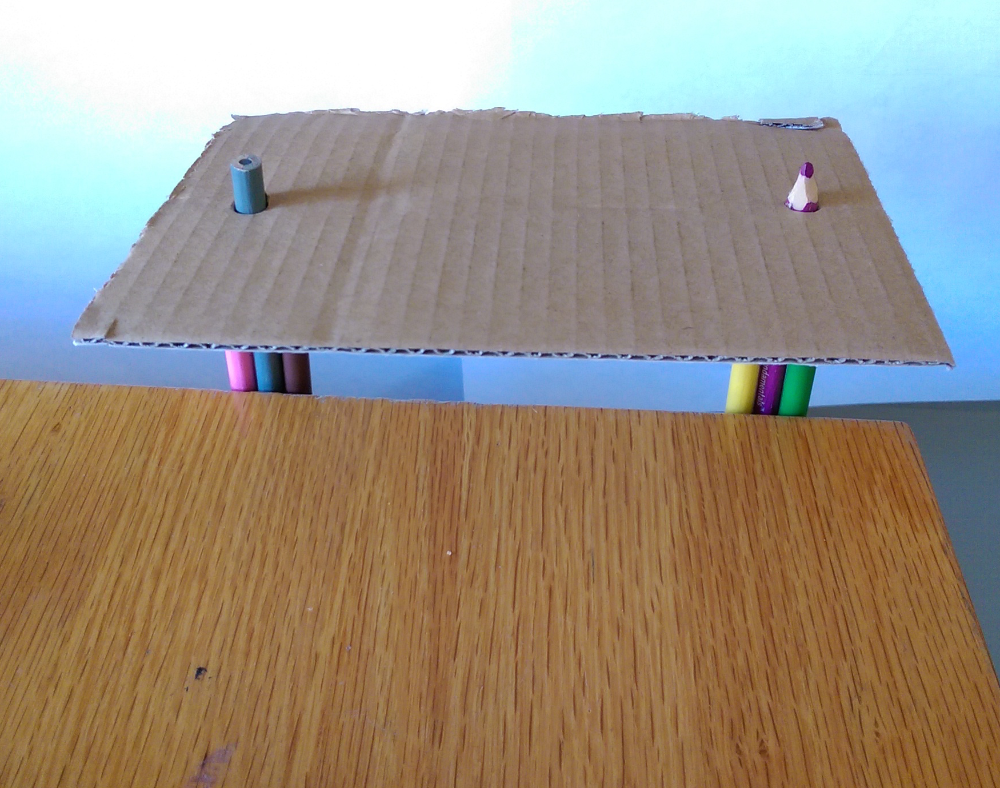

Practical Uploadable Problem Set #5
Peer Reviewers: Maria Ruiz, Akwasi Owusu-Akyaw
The picture above shows some sketches for a linear axis. (a),(c) and (d) will be best implemented with a leadscrew design. (b) is a simple rack and pinion design. (a) Is a simple birail system. In order to prevent over constraint, the carriage will have a circular journal in for one rail and an elliptical journal for the other. (b) Is a similarly simple design. The rack and pinion is easily manufactured on a laser cutter or CNC router. The main issue here is the racking problem which was analyzed here. (c) and (d) are similar designs. (c) utilizes a dove-tail which makes it more robust agains vertical loads in the z-direction. (d) is much easier to manufacture. It can be made on a router or lasercutter (for wood) or a mill for aluminum. The necessary error talerances to attain final accuracy is in the spreadsheet here
(a) is a wall mounted concept with a single dove-tail linear axis. It is actuated by a leadscrew and has diagonal bracing to reduce deflection. (b) has a dual-rail system, which requries two motors. Timing the motors will be crucial to the success of this system. (c) is a floor based telescoping mechanism. It also has two rails. Either a dual motor system or a cable system willl be utilized in this system. The necessary error talerances to attain final accuracy is in the spreadsheet here
(b) Dual Rail Wall mounted

| Functional Requirements | Design Parameters | Analysis | References | Risks | Counter-Measures |
|---|---|---|---|---|---|
| Electronically actuated | Stepper motor and leadscrew design | Torque, power analysis | PMD, datasheets | Cables, Connections | Cable ties, proper fastening |
| Support weight of items and person | Be able to handle 200N | Bearing and structure mechanics | PMD, Material Properties | ~ | ~ |
| Two positions | Two resting positions | Controls, Mechanics | PMD, Datasheets | ~ | ~ |
| Little deflection | Decrease error and deflections | Beam-bending, compliance analysis | Euler-Bernoulli Beam Theory, PMD | Increased weight, cost | Use better geometry and exercise wisdom |
| Within budget | Cost less than $100 | Recycle/Re-used materials | Re-use material sites, McMaster, Amazon | Might get inferior items | Exercise caution and wisdom |
| Easy mount, portable | Detachable flat surface | Coupling design and analysis | Precision Machine Design | Reduced robustness | Better coupling design |
(c) Telescoping Floor Table
| Functional Requirements | Design Parameters | Analysis | References | Risks | Counter-Measures |
|---|---|---|---|---|---|
| Electronically actuated | Telescoping, or scissor-lift | Torque, power analysis | PMD, datasheets | Risk of injuring user | Guards, Covers can be utilized |
| Support weight of items and person | Be able to handle 200N | Bearing and structure mechanics | PMD, Material Properties | ~ | ~ |
| Two positions | To resting positions | Controls, Mechanics | PMD, Datasheets | ~ | ~ |
| Little deflection | Decrease error and deflections | Beam-bending, compliance analysis | Euler-Bernoulli Beam Theory, PMD | Increased weight, cost | Use better geometry and exercise wisdom |
| Within budget | Cost less than $100 | Recycle/Re-used materials | Re-use material sites, McMaster, Amazon | Might get inferior items | Exercise caution and wisdom |
| Easily portable | Reduced weight and increase compactness | Coupling design and analysis | Precision Machine Design | Reducing weight would reduce stiffness | More rigid mechanical design |
The floor and wall mounted design are the most promising. I have created priliminary error apportionments for each of them: floor-error-app.xls and wall-error-app.xls. The floor mouned system has the same error alloted to each leg.
For the floor system, the only possible pinch point is the joint of the telescoping arm. A plastic cover can be placed to prevent pinching. Wires can be cleanly placed without posing a safert threat.
The wall mounted system has mounting requirements for walls which makes it less desirable. Plastic covers or even bellows can be added to potential pinchpoints and prolong the life of the machine.